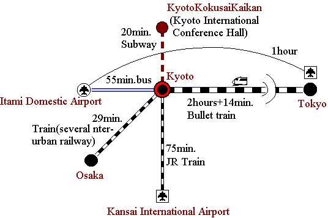

| Kyoto has many modern hotels with accommodations for up to 20,000 visitors. Located near the center of Japan, it is readily accessible by land and air. The high-speed Shinkansen (bullet train) links Tokyo with Kyoto in 2 hours and 15 minutes. Overseas visitors arriving at Kansai International Airport (KIX) have a comfortable 75-minute ride by the JR Haruka Express train to Kyoto Station. There is a direct subway link from Kyoto Station to Kyoto International Conference Hall, taking about 20 minutes. | 
|
Official Homepage
of KICH is here.
!!warning!! This page contains lots of beautiful photos, but the line
to this page is very slow.
It may take a long time to see it from outside of Japan
More about Kyoto: